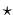
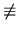

You are chief debugger for Poorly Guarded Privacy, Inc. One of the top selling product, ReallySecureAgent©, seems to have a problem with its prime number generator. It produces from time to time bogus primes N. After a while, you realize that the problem is due to the way primes are recognized.
Every phony prime N you discover can be characterized as follows. It is odd and has distinct prime factors, say N = p1p2...pk with pi pj, where the number k of factors is at least 3. Moreover, for all i = 1..k, pi - 1 divides N - 1. For instance, 561 = 31117 is a phony prime.
Intrigued by this phenomenon, you decide to write a program that
enumerates all such N's in a given interval
[Nmin, Nmax],
with
1 Nmin < Nmax < 231,
Nmax - Nmin < 106.
Nmin < Nmax < 231,
Nmax - Nmin < 106.
Input consists of several test cases, each of them following the description below. A blank line separates two consecutive cases.
Each test file contains one line. On this line are written the two integers Nmin and Nmax separated by a blank.
For each test case, output the list of phony primes in increasing order, one per line. If there are no phony prime in the interval, then simply output `none' on a line.
The outputs of two consecutive cases will be separated by a blank line.
10 2000 20000 21000
561 1105 1729 none